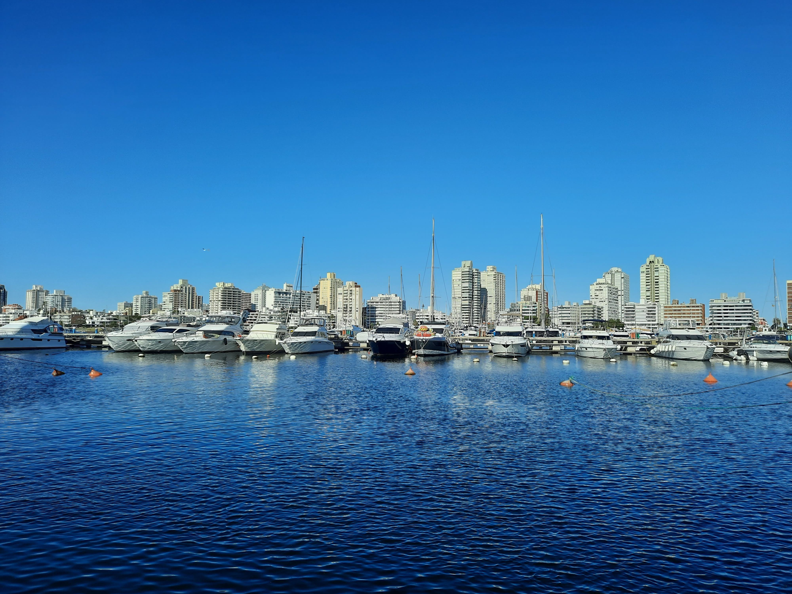

Go Back
Punta del Este

Punta del Este is the most famous tourist area of Uruguay. Known as the St. Tropez of South America it offers a very exclusive, beautiful and relaxed atmosphere. It is located on a peninsula surrounded by idyllic beaches. The area has developed into a crucial tourist base in the region. Maldonado is the town that borders Punta del Este. Maldonado has retained a more local feel and isn't really a touristy area. It is where many locals live including many family members of mine. It's worth also visiting for several reasons such as cheaper restaurants and products, as well as more of an insight into Uruguayan culture. Here is my guide for the Punta del Este/ Maldonado area.
There are two main beaches in the Punta del Este/ Maldonado area. They are called Playa Mansa and Playa Brava. Mansa means calm and brava means rough and these names accurately translate to the water conditions at these beaches. Playa Brava is where you'll see people surfing and is typically busier than Playa Mansa. It's proximity to Gorlero perhaps results in more people visiting it. Also the famous "Dedos" (fingers) are at Playa Brava. Playa Mansa is a better option if you prefer calmer waters. There are many different activities at both beaches especially in the summer months such as boating, jetskiing, parasailing etc. You can also see many boats and cruise ships, mostly from Playa Mansa.
Gorlero is the main street in the center of Punta del Este and is full of shopping, restaurants, bars and an outdoor market. It is right on the peninsula so it is surrounded by beaches a few blocks away on both sides. Gorlero is a great area to explore and you can find many things to do here. Definitely try a churro from Churros Manolo and visit "La Feria" (The artisan market). This market has all handmade products that range from belts, purses and clothing to gems, jewelery and unique Uruguayan products such as bombillas and mate gourds. You can also enjoy the plaza that the market is located in. It has a cool statue of Artigas (The liberator of Uruguay). Also nearby you can see the old church and lighthouse, visit the popular skate park or even go to the casino. Gorlero has many things to do and it's likely you will be here at some point if you visit Punta del Este.
Punta Ballena is a must go place in the area. It offers a spectacular sunset view and is a popular spot for fisherman. You can watch the fisherman and paragliders, buy souvenirs and see the impressive Casa Pueblo. Casa Pueblo is a massive museum on the hillside which used to belong to a Uruguayan artist named Carlos Páez Vilaró. He used to live here during summers but since he passed away it was turned into a museum. It's incredible location and enormous size makes it a sight worth seeing. You can go inside for a fee. Below Punta Ballena are "Las Grutas" which are big rocks and caves alongside the Ocean. The main cave here used to be a nightclub back in the 80's according to my mom. Now it's abandoned but is a cool place to explore. You should not miss coming to Punta Ballena whilst in Punta del Este.
One of my favourite places to visit in Punta del Este is the port. Here you can see countless boats and yatchs as well as a lively fish market full of vendors preparing fish and seafood as well as the hungry sea lions and seaguls who are always on the lookout for scraps. It's a very entertaining place to visit and is the best place if you want to buy some fresh fish. Make sure to walk up the walkway next to the concrete sea wall for some of the best views of the city and surrounding area. Next to the port are a few restaurants and a really good gelato place. I will mention more about these places in the food section. Another activity that you can do from the port is take a boat to Isla Gorriti (Gorriti island). This island is very beautiful and offers some great beaches and a nice day trip from the city.
There is a huge amount of unique and delicious food in Uruguay. I've been to plenty of top foodie destinations such as India, Italy, Vietnam and Mexico but am very surprised how unknown Uruguayan food is. I would rank it in my top 5 cuisines (I guess this would also encompass Argentinian and even some Brazilian foods as well). Parrilla is fairly well known because of Argentina but it's also just as good (maybe even better) in Uruguay. Parrilla is basically a metal or iron grill grate situated over a heat source of hot coals or wood embers. They use this to cook a massive range of meat such as chorizo, mollejas, asado, provolone, pamplona, vacio, ternero. Uruguayan parrillas have to be the best type of barbecue I've ever experienced. A fantastic buffet style parrilla in Maldonado is Con Historia. Along with the all-you-can-eat parrilla comes a salad bar with tons of variety and you get a half litre of wine included in the cost. All for about 20 usd. Another food that is more unique to Uruguay is the chivito. This is the Uruguayan national dish and is kind of like a hamburger but different. It is a thin slice of tender cooked beef steak, with mozzarella, ham, tomatoes, mayonnaise and black or green olives, and commonly also bacon, fried or hard-boiled eggs, served as a sandwich in a bun. They are delicious and beat most burgers I've tried. Punta del Este also has a good variety of seafood options. You can visit the port to buy the freshest fish and other items (though some other items such as shrimp are imported). There are also great seafood restaurants near the port such as Oscar's. I'd highly recommend trying Pesca del Dia (Fish of the day) with parmesan risotto and chiperonis. Chipironis are a garlicy, oniony calamari type dish that is delicious. Uruguayans also love their desserts and there are endless options such as churros, gelato, and alfajores. There is a great gelato place right next to the port called Gelaterio Il Porto. These are all must try foods in Uruguay.
The most important drink that you should be aware of during your time in Uruguay is "mate". It's like a Uruguayan tea but is very unique and is an enormous part of the culture here. You will see people carrying thermostats full of hot water holding something that looks like a large pipe. You fill these mate guords with yerba mate which is like a type of tea finely ground up. You then pour the hot water into the gourd and sip it through a bombilla (see the metal straw in the picture). It's hard to compare it to anything else I've ever had but is probably most similar to a strong tea with a bitter taste. It is a stimulant similar to coffee but stronger. You'll see Uruguayans enjoying mate at any given time throughout the day!
Punta del Este is typically where tourists will be staying. Gorlero street that I mentioned before is the main road in Punta del Este. There are many restaurants, shops, bars and activities here. The artisan market is a great place to visit and you can find really nice hand crafted items like belts, wallets and jewelery. A few bars/ restaurants I enjoy in this area are Capi, El Bandito and Moby Dick. Capi and Bandito are across the street from each other and are relatively cheap. Moby Dick pub is down by the port and is a little bit more expensive but is very trendy and is a great spot for nightlife. Uruguayan nightlife is unique for it's lateness. Maybe only Argentina is on par with them on this. Many clubs are empty until late hours in the morning like 2 or 3. Then they fill up and are often open all night long well into the next day. Gorlero has many hotels and hostels and is typically where many tourists base themselves out of. It's a short walk from Gorlero to the port and also to the beaches and Los Dedos. There's a cool food court worth visiting which is near this area called Box Garden. At this food court you can find Parrilla, pizza, sushi, kebabs, Chinese food, a pool bar and more!
Maldonado is the small city that borders Punta del Este and is one of the largest population centers in the country. It is an older area with a traditional Latin American style central plaza next to a cathedral. It is a more local area with a denser more urban Latin American feel. There are more street food options here and you can find some panchos (hotdogs) and churros here. There are also plenty of restaurants, shopping and service businesses. There are schools, universities, sports stadiums. This area offers a better insight to the life of an average Uruguayan. It's also a great area to go for slightly cheaper restaurants and products compared to areas near the port or Gorlero. The pink cathedral and main plaza are nice and just across the street is a small walking street called Sarandi.
La Barra is a town East of Punta del Este but is also a very popular area. This is probably the trendiest area for nightlife and it's main strip can sometimes become congested with late night partiers. Aside from this it's a sleepy beach town with beautiful beaches, unbelievable real estate and a unique vibe that I've only ever seen in Uruguay. There is also a cool bridge on the way in distinguished by its waviness. The canal walls underneath the bridge have nice paintings of crabs too.